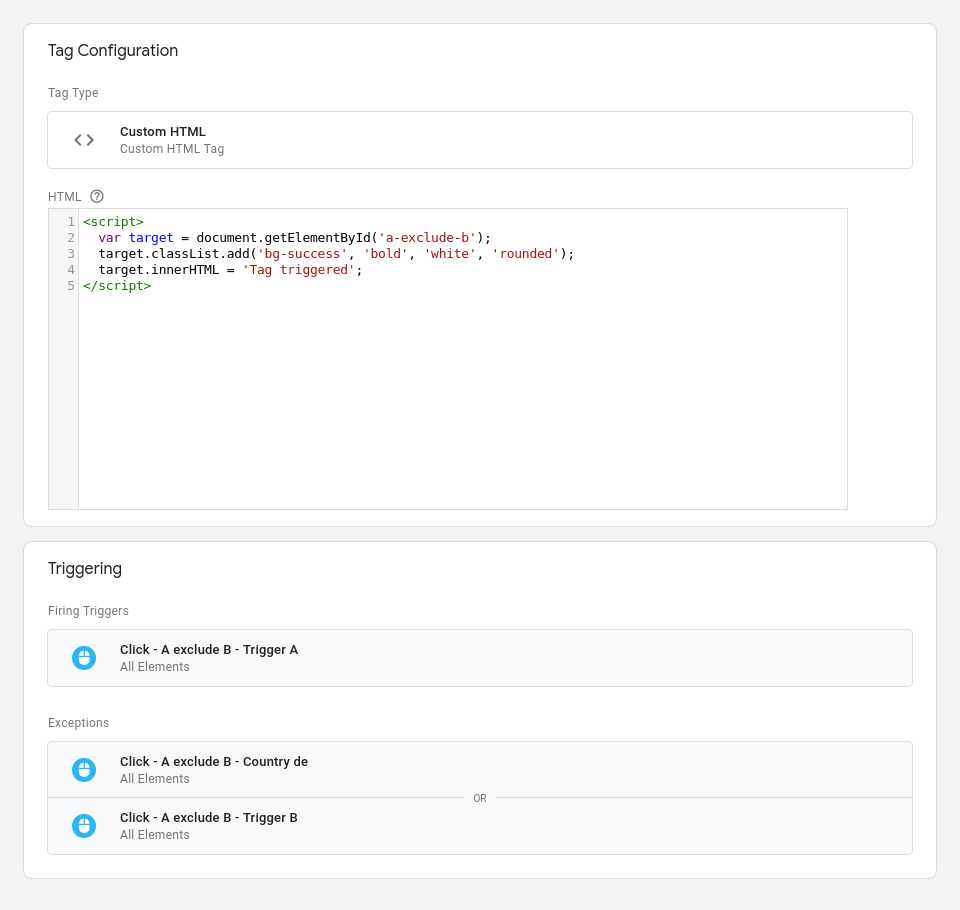

The goal of this page is to see how different GTM tags and triggers interact with each other and how to prevent/allow tags to run.
I wanted to create a couple of examples to understand how different events can affect tags from firing and what options does GTM provide.
Just to be clear: the naming convention and the way tags are set up, the code that is in the tag itself are not what I would generally suggest. The examples here are purely to explore different solutions around tag triggering options GTM provides.
If you want to play around with this page you can find more info on how to set it up on the project page.
Show GTM screenshot
Example 1 - Tag triggered by A or B
Simple example, when a Tag has multiple triggers selected the tag will fire (e.g. added to the page) when either of the triggers occours.
Events are in an 'OR' relationship, meaning either event can trigger the tag, from the tag page there is no way to tell gtm to change the operator to 'AND'.
Show GTM tag set up
Tag did not fire
Example 2 - Tag triggered by A with the exclusion of B
The code for the Tag will trigger if the trigger A happens but B did not occour at the same time.
You can use this strategy if, for instance, you want to exclude specific tags on page load on certain countries.
Notice that the tag fires when the "trigger A" fires but with the exclusion of "country de" or "Trigger B". If you trigger B and then trigger A the tag fires regardless.
Show GTM tag set up
You can see at the bottom of the tag the two exclusions

Tag did not fire
Example 3 - Tag triggered by A and B
When you need two events to occour for a tag to show you have the option to use tag groups.
Note that the event only triggers once when both triggers are activated, to try again press the reload button.
Show GTM tag set up
The tag set up is simple, just a trigger would fire the tag:
However instead of a normal trigger I use a trigger group, which is a conjunction of two triggers in an AND relationship:
Tag did not fire
Example 4 - Tags sequencing
Let's assume you want to implement multiple tags that depends on multiple events a, b like the above, but those tags all have a set up tag and you want to set up a trigger group only for the set up tag, not for all tags depending on that.
An example might be asking people if they want to be tracked by vendor x. Vendor x tag would appear in multiple pages for people that consented but additional tags are set up on other events. Is it possible to set up tag dependency so only the main tag needs a tag group while all other tags will just need to include the tag correctly?
Unfortunately the answer is no. You can not use this mechanism to add extra conditions on the parent tags and leave the children tags with an easier configuration.
Show GTM tag set up
The parent tag has a rule to trigger when the Parent trigger fires, but when the firing conditions for the childrens are met the parent triggers regardless:
Child 1 requires the parent without extra enforcements
Child 2 requires the parent but with the 'Don't fire Tag sequencing - Child1 Tag if Tag sequencing - Parent Tag fails or is paused' tickbox selected